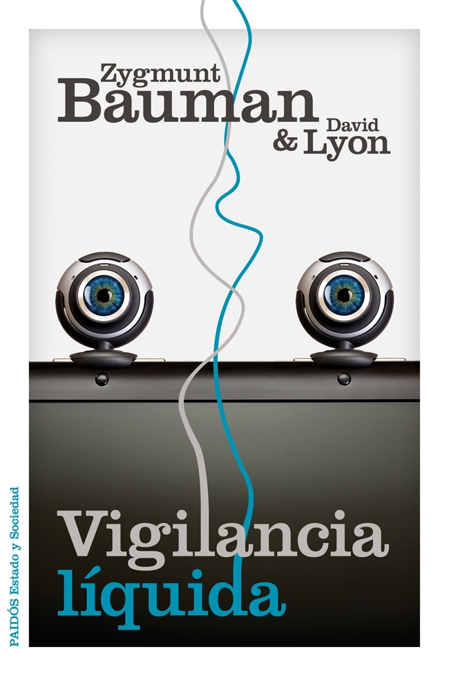

|

Hoy en día, los detalles más insignificantes de nuestras vidas son registrados y examinados como nunca antes, y a menudo quienes son vigilados cooperan voluntariamente con los vigilantes. Desde Londres y Nueva York hasta Nueva Delhi, Shanghái y Río de Janeiro, la presencia de cámaras de vídeo en los lugares públicos ya es algo habitual y aceptado por la población. En la actualidad, los viajes aéreos implican el paso por escáneres humanos y controles biométricos que se han multiplicado a raíz del 11-S. Diariamente Google y los proveedores de tarjetas de crédito apuntan el detalle de nuestros hábitos, preocupaciones y preferencias, y con ellos van elaborando estrategias de marketing personalizadas con nuestra activa y, en algunos casos, entusiasta cooperación.
6.60€ |